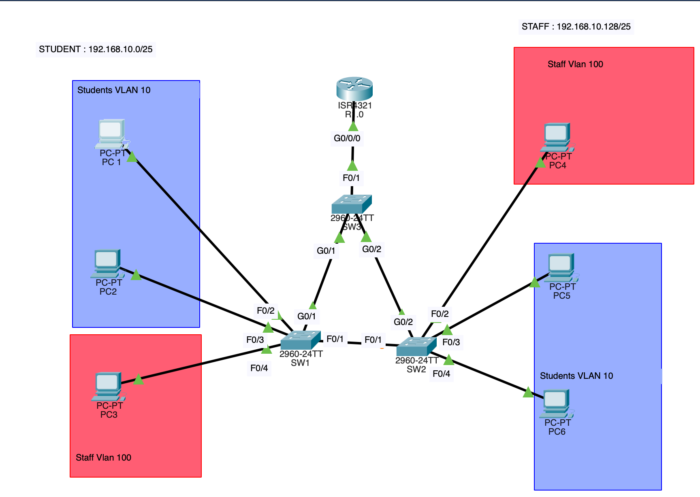

Inter-VLAN Routing with Router-on-a-Stick
Cisco Packet Tracer lab
I configured three switches and a router from scratch in Cisco Packet Tracer: two separate VLANs for students and staff, connected by a router that uses a single physical interface split into subinterfaces.
Goal
Separate the traffic of two user groups with VLANs, then allow the groups to communicate in a way controlled by the router. The project has two parts: first Layer 2 isolation, then routing between the VLANs.
What I did
The topology (devices, cabling and PC IP addresses) was already provided in the starting file. The switches and the router had no configuration: I wrote all the commands on SW1, SW2, SW3 and R1 myself, verified the result with pings and show commands, and corrected the ports that did not match the real connections in the lab description.
Topology

Links
| From | To | Type |
|---|---|---|
| R1 G0/0/0 | SW3 F0/1 | Trunk |
| SW3 G0/1 | SW1 G0/1 | Trunk |
| SW3 G0/2 | SW2 G0/2 | Trunk |
| SW1 F0/1 | SW2 F0/1 | Trunk |
| SW1 F0/2, F0/3, F0/4 | PC1, PC2, PC3 | Access |
| SW2 F0/2, F0/3, F0/4 | PC4, PC5, PC6 | Access |
Addressing plan
| Device | VLAN | IP address | Mask | Gateway |
|---|---|---|---|---|
| PC1, PC2, PC5, PC6 | 10 Students | 192.168.10.1 – .4 | 255.255.255.128 | 192.168.10.126 |
| PC3, PC4 | 100 Staff | 192.168.10.130 and .129 | 255.255.255.128 | 192.168.10.254 |
| R1 G0/0/0.10 | 10 | 192.168.10.126 | 255.255.255.128 | - |
| R1 G0/0/0.100 | 100 | 192.168.10.254 | 255.255.255.128 | - |
The 192.168.10.0/24 network is split into two /25 subnets: students use 192.168.10.0/25 (broadcast .127) and staff use 192.168.10.128/25 (broadcast .255). Each subnet's gateway is its last usable address. VLAN 99 (Native_Unused) is the native VLAN on the trunks and hosts no devices.
Part 1: VLAN segmentation
Creating the VLANs (on SW1, SW2 and SW3)
vlan 10 name Students vlan 100 name Staff vlan 99 name Native_Unused
SW1: access ports and trunks
interface range fa0/2 - 3
switchport mode access
switchport access vlan 10
spanning-tree portfast
interface fa0/4
switchport mode access
switchport access vlan 100
spanning-tree portfast
! trunks to SW2 and to SW3
interface range fa0/1, g0/1
switchport mode trunk
switchport trunk allowed vlan 10,100
switchport trunk native vlan 99
SW2: access ports and trunks
interface fa0/2
switchport mode access
switchport access vlan 100
spanning-tree portfast
interface range fa0/3 - 4
switchport mode access
switchport access vlan 10
spanning-tree portfast
! trunks to SW1 and to SW3
interface range fa0/1, g0/2
switchport mode trunk
switchport trunk allowed vlan 10,100
switchport trunk native vlan 99
Expected result of Part 1
PC1 → PC6 succeeds (same VLAN 10, across the trunk). PC1 → PC3 fails: without a router, the two VLANs are isolated.
Part 2: routing between the VLANs
SW3: trunks to the router and the access switches
interface range fa0/1, g0/1 - 2 switchport mode trunk switchport trunk allowed vlan 10,100 switchport trunk native vlan 99
R1: dot1q subinterfaces
interface g0/0/0
no shutdown
! no IP address on the physical interface
interface g0/0/0.10
encapsulation dot1q 10
ip address 192.168.10.126 255.255.255.128
interface g0/0/0.100
encapsulation dot1q 100
ip address 192.168.10.254 255.255.255.128
On each subinterface, encapsulation dot1q must come before the IP address: the router needs to know which VLAN the subinterface serves before it can be given an address.
Verification
show vlan brief show interfaces trunk show ip interface brief (on R1) show ip route (on R1)
| Test | Expected | Reason |
|---|---|---|
| PC1 → PC2 | Succeeds | Same VLAN, same switch |
| PC1 → PC6 | Succeeds | Same VLAN, across the trunk |
| PC1 → PC3 | Succeeds | Routed by R1 between VLAN 10 and 100 |
| PC6 → PC4 | Succeeds | Routed by R1 |
| PC3 → PC4 | Succeeds | Same VLAN 100, across the trunk |
Skills used
VLAN and 802.1Q trunk design, a dedicated native VLAN, portfast on access ports, router subinterfaces for inter-VLAN routing, /25 subnet calculation, and troubleshooting with show commands and ping.